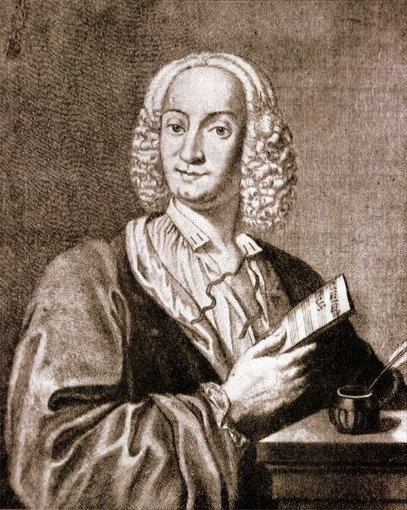
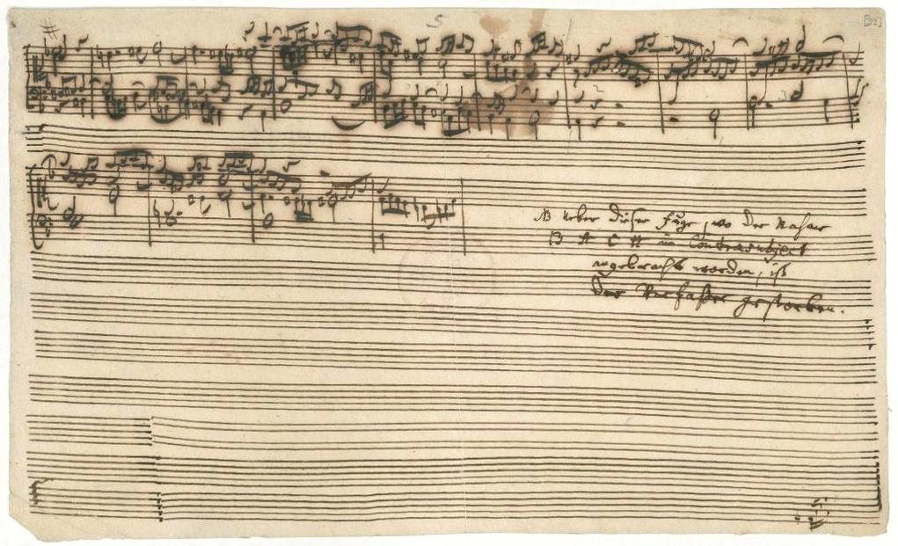
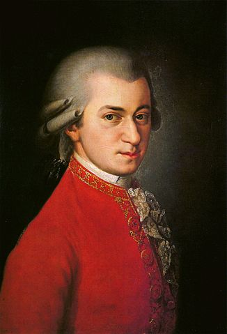
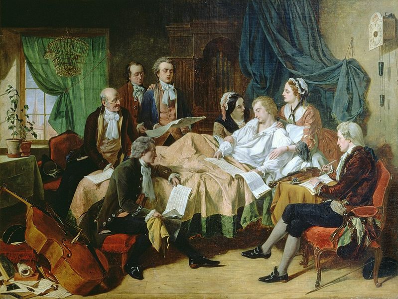
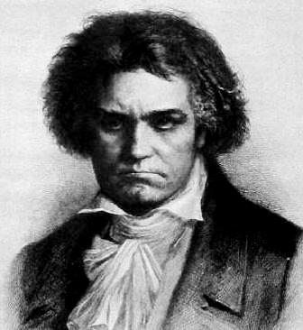
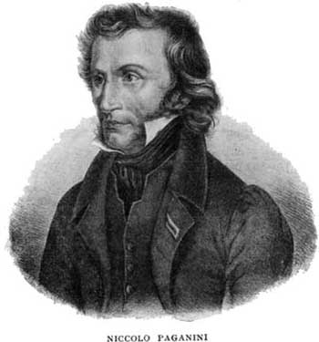

Вас вітає навчальна програма «Видатні композитори класичної музики». За її допомогою ви можете ознайомитись із найбільш відомими композиторами класичної музики, а потім перевірити свої знання в цій темі.
Щоб почати вивчення матеріалу, натисніть «Теорія» в меню вгорі.
Якщо ж ви бажаєте пройти тести, в меню виберіть «Тести».
Теорія
Для початку ми коротко ознайомимось, яку музику називають класичною. Існує аж три визначення класичної музики:
- Зразкова музика — та, яка пройшла випробування часом, і яку досі продовжують слухати і захоплюватись нею;
- Музика другої половини XVIII ст. — початку XIX ст., тобто музика Епохи класицизму;
- Музика, написана із дотриманням певних правил та канонів, і призначена для виконання симфонічним оркестром або солістами.
Зазвичай коли кажуть «класична музика», то мають на увазі саме третє поняття. Музика, написана для симфонічного оркестру або солістів і з дотриманням традицій європейської музики, які формувались з XVII і аж до XIX століття.

Класична музика приблизно поділяється на такі епохи:
- Ренесанс (1400—1600 рр.)
- Бароко (1575—1750 рр.)
- Класицизм (1700—1850 рр.)
- Романтизм (1775—1925 рр.)
- Модерн (1875—2000 рр.)
- Постмодерн (від 1920 р.)
Найбільш «класичними» епохами класичної музики вважаються бароко, класицизм та романтизм, оскільки саме в ці три епохи жили і творили найвидатніші композитори у світі. Усі композитори, про яких розповідає ця навчальна програма, відносяться саме до цих епох.
Починати знайомство з найвидатнішими композиторами класичної музики потрібно з епохи бароко, далі переходити до класицизму, а потім — до романтизму. Після цього ви можете пройти тести, щоб перевірити, як добре ви засвоїли отримані знання.
Епоха бароко
1575—1750 рр.
Антоніо Лучіо Вівальді
Антоніо Вівальді народився у 1678 році у Венеції (Італія). Його батько любив грати на скрипці, тому він привчив до цього і свого сина. Тобто Антоніо ще змалку займався музикою. У 1703 році він став священиком. Його називали Червоним священиком (Il Prete Rosso), напевно тому що в нього було дуже руде волосся. Вже через рік Вівальді захворів на астму, і через це йому дозволили не проводити богослужіння. Натомість він повернувся до музики і став вчителем скрипки в притулку для дівчат.
Саме з посади вчителя скрипки почався шлях Вівальді як композитора. За своє життя Вівальді написав понад 90 опер, більше 500 концертів, 56 світських кантат, 76 сонат та ін.
Своєю музикою Вівальді зробив величезний вплив на іншого барокового композитора — Йоганна Себастьяна Баха. В ті часи, коли жив Вівальді, він не був надто відомим і популярним. Ніхто не вважав його дуже геніальним композитором. Більшість творів Вівальді були відкриті для публіки аж в ХХ столітті. Але Бах завжди любив Вівальді і вважав його чудовим композитором. Він був найбільшим фанатом Вівальді. В музиці самого Баха помітний гігантський вплив Вівальді. Бах захоплювався ним, слухав його концерти і вивчав його твори.
Одним з найпопулярніших творінь Вівальді є цикл скрипкових концертів «Пори року». Крім того цей цикл вважається одним з найвідоміших музичних творів всієї епохи бароко. Частину концерту «Літо» ви можете прослухати тут:
За життя Вівальді був більше відомим не як композитор, а як віртуозний скрипаль.
Помер Вівальді у 1741 році у Відні (Австрія).
Йоганн Себастьян Бах

Один із найвидатніших композиторів всіх часів. Крім композиторства ще він вмів віртуозно грати на органі та скрипці.
Йоганн Бах народився у 1685 році в Німеччині. Його батько, як і батько Вівальді, був скрипалем. Вся родина Бахів вже багато поколінь була музикантами — серед них були скрипалі, флейтисти, сурмачі, органісти, капельмейстри. Першу скрипку Йоганну подарували, коли йому було 5 років. Він дуже швидко навчився на ній грати. Крім цього, він співав у хорі, оскільки мав дуже гарний голос.
Перша схильність до композиторства у Баха виникла ще в юності. Якось йому вдалось дістати із замкненої шафи нотний зошит свого старшого брата, де були записані твори відомих на той час композиторів. Ночами він таємно переписував ці ноти. Ці безсонні години при місячному світлі надалі згубно позначаться на зорі Баха.
Через якийсь час у Баха мутував голос, через що він покинув хор і займався лише скрипкою. Потім він почав захоплюватись органною музикою. У 1705 році він пройшов пішки близько 400 кілометрів до міста Любек, щоб послухати гру одного видатного органіста. Вже через два роки Бах навчився грати на органі настільки добре, що його взяли на роботу в церкву.
Рік за роком Бах вдосконалювався як музикант і як композитор. У 1723 році, коли він переїхав до Ляйпціґу, там його запросили стати «музичним директором» всіх церков міста. Він стежив за складом музикантів і співаків, навчав їм і тому подібне.
Наприкінці 1740-х років здоров’я Баха погіршилось, особливо турбувала різка втрата зору. Але він продовжував творити, диктуючи ноти для запису. Помер він у 1750 році.
Творчість Баха складає понад 1000 композицій. Його твори прийнято позначати номером BWV (скорочено від Bach Werke Verzeichnis — каталог творів Баха). Номери BWV 1-224 асоціюються з кантатами, BWV 225–249 — з ораторіальними творами, BWV 250–524 — це хорали й духовні піснеспіви, BWV 525–748 — органні твори, BWV 772–994 — клавірні твори, BWV 995–1000 — твори для лютні, BWV 1001-1040 — камерна музика, BWV 1041-1071 — оркестрові твори та BWV 1072–1126 — канони і фуги.
Більшість творів він написав для органу та клавіру (це щось схоже на скрипку). Бах був першим, хто писав концертні твори для клавіру, тим самим він затвердив самостійність цього інструменту (раніше клавір використовували лише як доповнюючий інструмент).
Епоха класицизму
1700—1850 рр.
Вольфґанґ Амадей Моцарт
Австрійський композитор, один із найгеніальніших музикантів у світі. Творчий доробок Моцарта становить понад 600 творів: більш як 50 симфоній, понад 19 опер, велику кількість інструментальних концертів (зокрема 27 фортепіанних), 13 струнних квартетів, 35 сонат для скрипки, Реквієм та багато інших інструментальних і хорових творів. Музика Моцарта стала вишенькою на торті класичної епохи.
Моцарт народився у Зальцбурзі у 1756 році. Спершу його назвали Йоганном-Хризостомом-Вольфґанґом-Теофілом Моцартом, але його ім’я значно змінювалось протягом життя. В дорослому віці він зазвичай називав себе Вольвґанґ Амадей, але було і багато інших варіантів. Захоплення музикою в Моцарта почалось у трирічному віці. В чотири він вже вмів грати на клавірі кілька менуетів і п’єс. Він грав їх без помилок і з найвищою витонченістю, чітко витримуючи ритм. У п’ять років він вже писав невеличкі п’єси, які грав батькові, а той записував їх на папір.
Протягом багатьох років родина Моцарта їздила Європою. В різних містах Амадея показували як вундеркінда, він давав концерти. Під час цих подорожей він познайомився з багатьма музикантами і ознайомився з творами інших композиторів. Особливо вплинув на нього Йоганн Крістіан Бах (син Йоганна Себастьяна Баха), з яким вони зустрілись у Лондоні.
Під час однієї з подорожей хлопець підчепив віспу, але батьки не робили йому щеплення, бо вважали, що на все воля божа — вмерти йому чи жити.
З 1773 до 1781 року він працював у різних місцях та на різних посадах (придворним музикантом, органістом і тд.), але ніде не був задоволеним. Його метою було розпочати кар’єру «вільного митця». Згодом він таки звільнився і почав нову кар’єру у Відні. Там він часто виступав як піаніст і здобув славу найкращого клавішного музиканта у місті.
Протягом 1782-1783 років Моцарт ознайомився з працями Й. С. Баха та Г. Ф. Генделя. Це зробило потужний вплив на музику Моцарта. Спершу він писав багато творів, які імітували стиль бароко, а потім виробив свій власний стиль.
У Відні Моцарт познайомився з Гайдном, і вони потоваришували. Деколи вони імпровізували разом в струнному квартеті. Гайдн захоплювався Моцартом, і казав, що він «найвеличніший композитор для мене, якого я особисто знаю. Він має смак, більше того, має чудове знання мистецтва композиції».
У 1784 році Моцарт став масоном, увійшовши до масонської ложі «Благодійність». Вільне масонство відіграло важливу роль у подальшому житті Моцарта; він відвідував численні зібрання, частина його друзів були масонами, і з різних приводів він писав масонську музику. У 1787 році молодий Людвіг ван Бетховен приїхав до Відня на два тижні з надією повчитися у Моцарта. Свідчення про те, що трапилось під час цього візиту суперечливі, і розглядаються принаймні дві гіпотези: що Моцарт прослухав Бетховена і похвалив його, і що Моцарт відмовився навчати Бетховена, і вони після цього більше не зустрічались.
Між 1788 і 1791 роками Австрія була у стані війни, через що аристократи не мали можливості і бажання витрачати багато грошей на музику. Тому кар’єра Моцарта пішла на спад. Він переїхав з центру Відня в дешеву квартиру в передмісті, і почав позичати гроші у свого друга-масона.
Останній рік життя Моцарта, до того, як хвороба остаточно вразила його, був роком величезної продуктивності і особистого відновлення. У цей період Моцарт написав дуже багато музики, включаючи деякі з його найкращих робіт: опера «Чарівна флейта», фінальний фортепіанний концерт К.595, концерт для кларнета К.622, останній з чудової серії струнних квінтетів к.614, мотет «Ave verum corpus» К.618 і незавершений «Реквієм» К.626.
Моцарт дуже хотів закінчити свій «Реквієм», і навіть тоді коли він вже не міг вставати з ліжка, страждаючи від опухлості, болю і блювоти. Він диктував ноти іншим, а ті записували, але закінчити твір все-таки не встиг. Тим не менше, «Реквієм» вважається одним з найкращих творів Моцарта. Помер він у 1791 році. Хворобу, яка стала причиною смерті, так і не визначали, можливо це був трихінок, грип, або отруєння ртуттю чи рідкісна хвороба нирок.
Моцарт є автором понад 600 творів. Твори Моцарта зазвичай нумерують за Каталогом Кехеля і використовують знаки K або KV.
Людвіг ван Бетховен
Останній із великої трійки композиторів епохи класицизму.
Велику роль у творчому становленні Бетховена відіграли Моцарт та Гайдн. Вже під час першого знайомства з Людвігом Моцарт був приємно вражений його імпровізаціями і говорив своїм друзям, що молодого музиканта чекає велике майбутнє. А Гайдн, у свою чергу, погодився із ним працювати (він був захоплений від почутої кантати Бетховена). Восени 1792 року Бетховен переїхав у Відень — це був початок нового періоду життя і творчості.
Творчість Бетховена прийнято поділяти на два етапи — раннього та пізнього Бетховена. До основних творів раннього періоду творчості Бетховена належать: 20 фортепіанних сонат, дві симфонії, шість квартетів, три тріо, септет, дев'ять сонат для скрипки з фортепіано, дві сонати для віолончелі з фортепіано, два квінтети, три фортепіанних концерти, балет «Творення Прометея», ораторія «Христос на Масличній горі». Все це було написано у різних жанрах з високою майстерністю, композиторською індивідуальністю, що було прийнято називати раннім Бетховенським стилем. До раннього Бетховена також відносять сонату для фортепіано №14 («Місячну»).
Коли композитор втратив слух, то з життєрадісного і товариського він перетворився на похмурого і віддаленого від людей. Від самогубства його врятувала тільки музика, його творіння. Він відчував. що ще не все зробив, для чого був покликаний. Саме в цей період почався перехід до нового Бетховенського стилю, більш героїчного та драматичного.
Разом із погіршенням слуху, погіршувалось життя Бетховена. Він не міг вільно спілкуватися з людьми, ускладнювалась його виконавська діяльність. У той час цікавість до серйозної, класичної музики різко зменшилася. Видавці навіть перестали публікувати сонати та симфонії, обмежуючись танцювальними п'єсами, перекладами популярних опер. На оперній сцені процвітали модні чужоземні новачки; процвітало салонне мистецтво… І саме в той час слава Бетховена почала гаснути. Бетховен часто у розмовах з друзями засуджував і взагалі різко та грубо висловлювався щодо імператора та влади загалом. І тільки світова слава вберегла композитора від арешту. Саме у роки кризи життя Бетховена його мистецтво стало надбанням широкої аудиторії, завоювавши народну любов.
Після певної перерви у творчості в музиці Бетховена з'являється новий стиль. Саме в цей час він написав свою славнозвісну Дев’яту симфонію. Думка про Дев'яту симфонію зародилася ще в роки кризи, але за реалізацію композитор взявся лише у 1822 р. Дев’ята симфонія — один з найпоширеніших творів Бетховена. Четверта частина цієї симфонії відома під назвою «Ода до радості» (через назву вірша, музикою до якого став цей твір; а початково той вірш взагалі називався «Ода до свободи»). «Ода до радості» — це також гімн Європейського союзу.
Відомі звернення Бетховена у своїй творчості до української народної пісні. Наприклад у циклі «24 пісні різних народів» (1816), є обробка пісні «Їхав козак за Дунай». Є також варіації на основі цієї пісні, а також варіації на основі пісні «За городом качки пливуть».
Крім всього вищезгаданого, Бетховен ще був педагогом і давав приватні уроків музики. Одним з його учнів був відомий згодом композитор Ференц Ліст. Ференца привели до Бетховена ще зовсім малим, і той не мав ніякого поняття про композиторство. Але Бетховен зразу розпізнав у Лісті талант і розвинув його.
Епоха романтизму
1775—1925 рр.
Ніколо Паґаніні
Італійський скрипаль-віртуоз, композитор та гітарист.
Народився 27 жовтня 1782 року в Генуї (Італія). Одинадцятирічним хлопчиком Паґаніні вперше виступив привселюдно в Генуї. В 1797, після короткого періоду занять, зробив своє перше концертне турне Ломбардією. Своєрідність манери гри, ні з чим не порівнянна легкість володіння інструментом незабаром принесли йому популярність по всій Італії. З 1828 до 1834 він дав сотні концертів у найбільших містах Європи, заявивши про себе як про найдивнішого віртуоза цілої епохи. Паґаніні грав у Німеччині, Франції, Австрії, Англії.
Ім’я Паґаніні завжди було оточено таємничістю. Він і сам сприяв цьому, говорячи про якісь незвичайні секрети своєї гри, які він розкриє тільки після завершення кар’єри. За життя Паґаніні було надрукувано дуже мало його творів, що зараз пояснюється тим, що він боявся, аби не розкрились якісь таємниці його віртуозності. Через свою таємничість і незвичайність багато хто вважав Паґаніні атеїстом, і через це єписком Ніцци (місто, де помер Паґаніні), відмовився відправляти за ним заупокійну службу.
Паганіні був справжнім віртуозом. Він грав використовуючи дуже оригінальні технічні прийоми, і виконував він їх з бездоганною точністю та впевненістю. Паганіні був власником дорогоцінної колекції скрипок Страдіварі, Гварнері, Аматі. Свою улюблену скрипку роботи Гварнері він заповів рідному місту, Генуї, оскільки не бажав, щоб хтось крім нього ще грав на ній. Ця скрипка після смерті композитора отримала ім’я «Вдова Паґаніні».
Творчий шлях Паґаніні був раптово перерваний у 1838 — причинами тому було підірване здоров'я музиканта, яке надзвичайно погіршилося, й ряд публічних скандалів, що виникли навколо його фігури. Два останні роки життя Паґаніні були надзвичайно тяжкими. Він мав хворі суглоби, кишки, горло. Надзвичайно важкими були сухоти, що зруйнували голосові зв'язки і у Паганіні зовсім пропав голос. Він міг вести діалог лише з допомогою сина, що перекладав батьківській шепіт. Помер маестро в Ніцці у 1840 році.
Все скрипкове мистецтво наступних епох розвивалося під впливом стилю Паґаніні. Його власні твори насичені дуже важкими пасажами, за якими можна судити про багатство технічних прийомів Паґаніні. Деякі із цих композицій становляють собою лише історичний інтерес, але інші — наприклад, Перший концерт ре мажор, Другий концерт сі-мінор й 24 каприси — посідають почесне місце в репертуарі виконавців сьогодення.